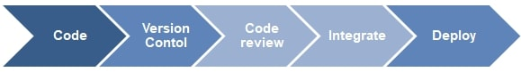

L'automatisation des réseaux

L'automatisation du réseau est le processus d'automatisation de la configuration, de la gestion, des tests, du déploiement et de l'exploitation des périphériques physiques et virtuels au sein d'un réseau. Avec les tâches et fonctions réseau quotidiennes automatisées et les processus répétitifs contrôlés et gérés automatiquement, la disponibilité des services réseau s'améliore.
Tout type de réseau peut intégrer l'automatisation. Les solutions matérielles et logicielles permettent aux centres de données, aux fournisseurs de services et aux entreprises de mettre en œuvre l'automatisation du réseau pour améliorer l'efficacité, réduire les erreurs humaines et réduire les dépenses d'exploitation.
Les bénéfices de l’infrastructure en tant que code sont :
La virtualisation des reseaux
Le principe de SDN
Le principe de NFV
Le principe de DevOps
Tout type de réseau peut intégrer l'automatisation. Les solutions matérielles et logicielles permettent aux centres de données, aux fournisseurs de services et aux entreprises de mettre en œuvre l'automatisation du réseau pour améliorer l'efficacité, réduire les erreurs humaines et réduire les dépenses d'exploitation.
Les outils de l'automatisation
Pour appliquer l’automatisation au réseau, plusieurs outils rentrent en jeux pour accomplir cette tâche, parmi ces outils on a :
- • Ansible, Puppet, Chef et Saltstack
- • Python avec ces librairies « Netmiko, Paramiko et Napalm »
- • Git/Github/Gitlab
- • NETCONF, REST API
Avantages de l'automatisation
Avec l’automatisation du réseau en bénéficie de :
- • Coûts réduits :l'automatisation réduisant la complexité de votre infrastructure underlay, il faut considérablement moins d'heures-personnes pour configurer, provisionner et gérer les services et le réseau. En simplifiant les opérations, en consolidant les services réseau, en réduisant l'espace et en désactivant les appareils sous-utilisés, donc moins de personnel pour dépanner et réparer, et réaliser des économies d'énergie.
- • Améliorez la continuité des activités : en supprimant les risques d'erreurs humaines, les entreprises peuvent offrir et fournir un niveau de services plus élevé avec plus de cohérence entre les succursales et les zones géographiques.
- • Meilleure compréhension et contrôle du réseau : l'automatisation contribue à rendre les opérations informatiques plus réactives au changement grâce à l'analyse. On gagne plus de visibilité sur le réseau et comprenez précisément ce qui se passe dans le réseau avec la capacité de contrôler et d'adapter au besoin.
- • Améliorez la continuité des activités : l'automatisation permet aux entreprises de développer des modèles opérationnels qui améliorent les délais de commercialisation. Cela permit à ajouter de nouveaux services, tester de nouvelles applications et résoudre des problèmes. Le temps nécessaire pour réaliser les améliorations est réduit, ce qui accroît la compétitivité et l'élasticité et, en fin de compte, augmente les bénéfices dans les résultats de l'entreprise.
Infrastructure en tant que code « IaC »
Infrastructure en tant que code « ou Infrastructure as Code (IaC) » est une approche de gestion des infrastructures de serveur, de stockage et de mise en réseau du centre de données. L'IaC vise à simplifier considérablement la configuration et la gestion à grande échelle. Avec la gestion traditionnelle de l'infrastructure du centre de données, chaque changement de configuration nécessite une action manuelle de la part des opérateurs et des administrateurs système. Avec IaC, les informations de configuration de l'infrastructure sont hébergées dans des fichiers normalisés, qui peuvent être lus par un logiciel qui maintient l'état de l'infrastructure. L'IaC peut améliorer la productivité et la fiabilité car il élimine les étapes de configuration manuelle.

Le flux de travail du l’IaC
Les bénéfices de l’infrastructure en tant que code sont :
- • Amélioration de la productivité : Les administrateurs et les opérateurs ne doivent plus effectuer d'étapes de configuration manuelles pour les modifications de l'infrastructure du centre de données.
- • Fiabilité améliorée : La configuration de l'infrastructure est contenue dans des fichiers électroniques et le logiciel est responsable du lancement des changements d'infrastructure, il y a donc moins de risque d'erreur humaine.
L’automatisation du réseau et l’IaC
L’automatisation et l’infrastructure en tant que Code sont deux termes étroitement liés, mais signifient des choses très différentes. L'infrastructure en tant que code vise à maintenir la configuration ou l'état de l'infrastructure du centre de données d'une manière connue. L'automatisation traite davantage du processus de transfert automatique de cet état dans l'infrastructure et de sa maintenance.
Technologies similaires :
La virtualisation des serveurs
La virtualisation des reseaux
Le principe de SDN
Le principe de NFV
Le principe de DevOps